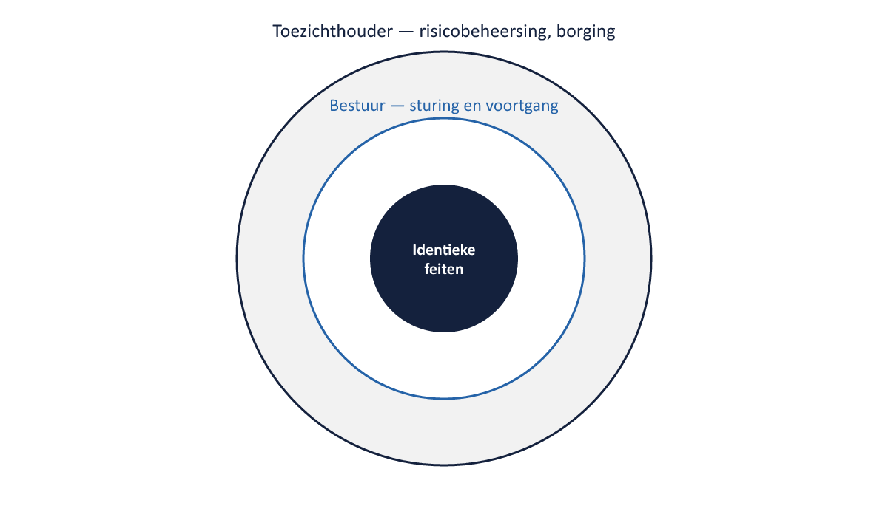

Sheet 1Titel
Project- en Programmamanagement
Niveau 3 · Deel 29: Casuïstiek-marathon II
Sheet 2Eén laag zwaarder
Deel 28: één antwoord, 12 minuten
Deel 29: twee antwoorden, 15 minuten — bestuur én toezichthouder
Sheet 3De kernregel, nu in de praktijk
Het register bepaalt de nadruk, nooit de feiten

Sheet 4Waarom dit zwaarder is
Te dicht bij elkaar: geen van beide sluit goed aan
Te ver uit elkaar: de feiten zijn gaan schuiven
Sheet 5Situatie 1: vertraging tranche 3
Twee maanden achterstand, deadline nog haalbaar
Bestuur vs. DNB (implementatieplan)
Sheet 6Situatie 2: onverwachte dis-benefit
30% meer telefonische vragen na livegang
Bestuur vs. AFM (communicatieplan)
Sheet 7Situatie 3: net op tijd gevonden fout
Rekenfout ontdekt en gecorrigeerd vóór uitvoering
Een gevonden fout = bewijs dat controle werkt
Sheet 8Situatie 4: resourceconflict
Geen toezichthouder relevant — waarom niet?
Interne capaciteitsafweging, geen materieel toezichtrisico
Sheet 9Situatie 5: interne twijfel over readiness
Bestuur wil dit niet delen met DNB
“Geen formeel onderdeel” is geen geldige reden om weg te laten
Sheet 10Situatie 6: het go/no-go-advies zelf
Alles komt samen
Bestuur vs. DNB, ná het besluit
Sheet 11Controle na het schrijven
Staan in beide versies dezelfde feiten?
Een buitenstaander ziet inconsistenties vaak sneller dan de schrijver
Sheet 12Vooruitblik
Deel 30: de masterproef — boardsimulatie met bestuur, DNB, AFM en de SRO, twee dagdelen